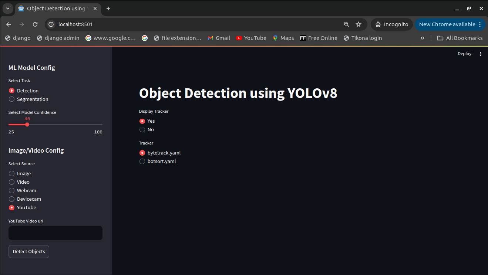

Bike-Helmet-Detectionv2
This repository contains the Bike Helmet detection using YOLOv8 in streamlit. This web application does processing on end users images and videos to detect bike rider, helmet and *no helmet and render processed images and videos to user.
Major python libraries used for the project
# Below is the list of the major packages needed for working in this project.
ultralytics==8.1.8 # For running inference using YOLOv8 model
streamlit==1.30.0 # Web application
pillow==10.2.0 # For managing images and videos
pytube==15.0.0 # For running inference on small youtube videos
File Structure
Bike-Helmet-Detectionv2 # Root folder of this github repository
├── app.py # Start page of the application
├── assets # Necessary assets for testing
│ ├── BikesHelmets6.png
│ ├── video_1.mp4
│ ├── video_2.mp4
│ └── video_3.mp4
├── .git # For managing files by git
├── .gitignore # Files to be not managed by git
├── helper.py
├── images # For rendering Predicted and not predicted to streamlit user interface
│ ├── BikesHelmets6_detected.jpg
│ └── BikesHelmets6.png
├── local_requirements.txt # For local machine dependencies installation
├── major_packages.txt # major packages needed for working in this project
├── packages.txt # Externally insatallion of package by streamlit for deployment
├── README.md # This readme.md file itself
├── requirements.txt # For deployment dependencies file
├── runs
│ └── detect
│ └── predict
│ └── BikesHelmets6.png # Predicted image
├── settings.py # Configuration blue print for this streamlit web application
├── videos # For rendering video into streamlit user interface
│ ├── video_1.mp4
│ ├── video_2.mp4
│ └── video_3.mp4
└── weights # Model weights
├── best.pt # Best model weight as pytorch format
├── information.txt # Information related to placing weights
└── last.pt # Last model weight as pytorch format
How to run this streamlit webapp project locally?
python3 -m venv .venv
source .venv/bin/activate
git clone https://github.com/Viddesh1/Bike-Helmet-Detectionv2.git
cd Bike-Helmet-Detectionv2/
pip install -r local_requirements.txt # For local
pip install -r requirements.txt # For deployment
streamlit run app.py
Note:- If this app is not working locally then please add opencv-python==4.9.0.80 below before opencv-python-headless==4.8.1.78 and opencv-contrib-python==4.8.1.78 in requirements.txt file
opencv-python==4.9.0.80
opencv-python-headless==4.8.1.78
opencv-contrib-python==4.8.1.78
Deployment Pipeline
Continuous delivery is done by streamlit to host on Streamlit Cloud through this Github repository.
Demo
Drag and drop the image for object detections

Select the video and click Detect Video Objects button

Works on only web camera
Please make sure web camera is connected

Works on native device camera (Webcam, Smartphone)
Select respective device and click on start button

Insert youtube url and click on Detect Objects button

Hosted on Streamlit:-
https://bike-helmet-detectionv2-dmehozp3lkef4wnssaepjf.streamlit.app/
Also see
1) https://github.com/Viddesh1/Helmet_test_1
2) https://github.com/Viddesh1/Bike-Helmet-Detection
3) https://github.com/Viddesh1/Bike-Helmet-Detection-Docs